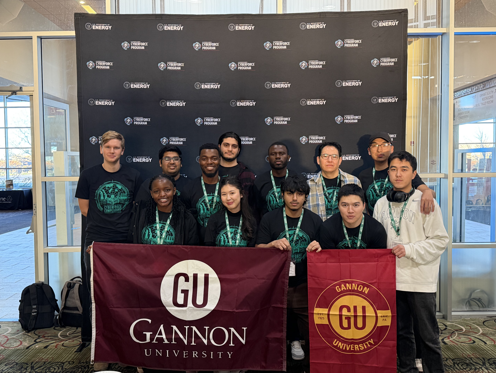
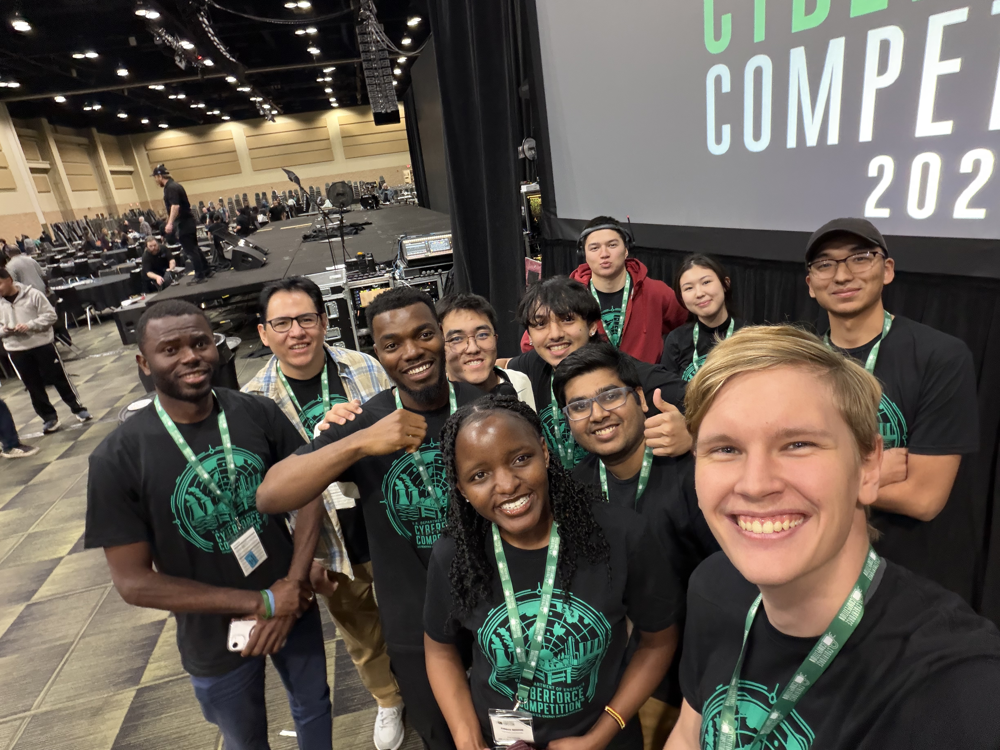
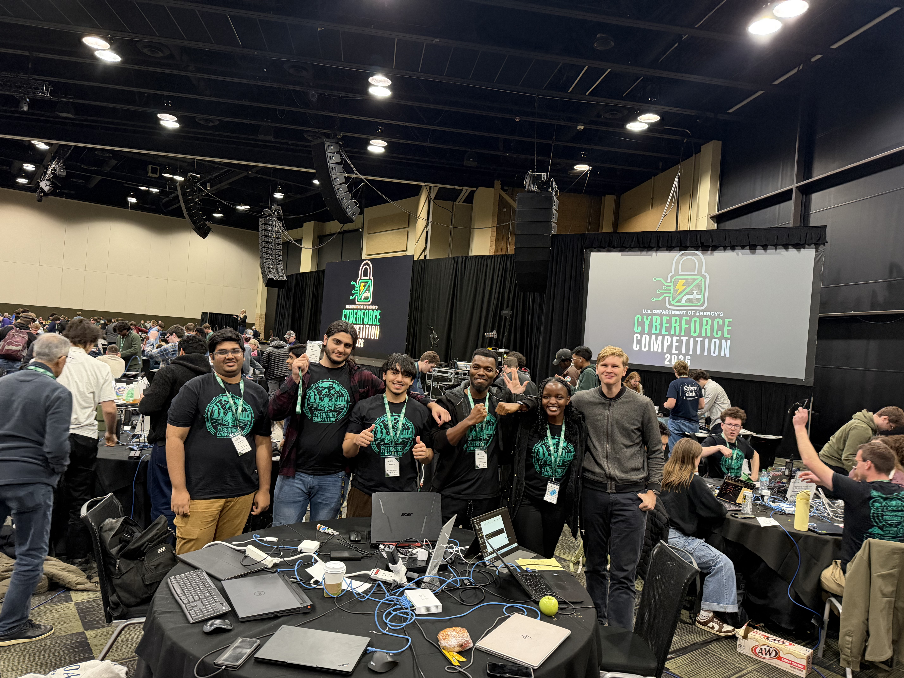

Competition Recap
14th Out of 100: Gannon Hacks Takes On the DOE CyberForce® Competition

On November 13–14, eleven cybersecurity students representing Gannon University and the Gannon Hacks Cyber Club travelled to Chicago for the U.S. Department of Energy (DOE) CyberForce® Competition, going up against around 100 teams from across the country.
Over one intense day, our students defended critical IT/OT infrastructure against relentless Red Team attacks. When the dust settled, Gannon had earned a top spot on the leaderboard in its very first CyberForce appearance.
What Is CyberForce?
The DOE CyberForce® Program competition puts student teams in the defender's seat. Each team is responsible for securing systems modeled on real-world critical infrastructure, keeping them running while a Red Team actively tries to break in. Winning takes more than technical skill: teams are also judged on documentation, communication and how well they work together under pressure.
The Road to Chicago
Our students did not walk in unprepared. In the weeks leading up to the competition, they put in countless hours of system hardening, security documentation and strategic planning, plus a few sleepless nights along the way.

Competition Day
Once the clock started, classroom concepts became real. Our students had to put incident response, OT security, vulnerability management and clear communication into practice while the Red Team kept up the pressure. Teamwork, problem-solving and quick decision-making were tested at every turn.

Meet Our Competitors

Eleven students represented Gannon in Chicago, many of them newer Gannon Hacks members competing for the very first time.

In Their Own Words
After the competition, participants shared what the experience meant to them.
"After weeks of intense preparation, system hardening, security documentation, strategic planning, and a few sleepless nights, achieving a 14th-place finish out of 100 teams in our very first appearance was an incredibly rewarding experience."
"This experience reinforced my belief that cybersecurity goes beyond technical skills; it's about teamwork, adaptability, leadership, and making critical decisions under pressure."
Abraham KlogoPresident, Gannon Hacks Cyber Club
"I thoroughly enjoyed my first CyberForce experience. Working alongside my teammates to defend critical infrastructure against simulated cyberattacks gave me the opportunity to apply what I've learned in the classroom and develop my skills in incident response, system hardening, and team coordination."
TimGannon Hacks Member
"Cybersecurity is more than a field of study at Gannon. It is an opportunity to develop the next generation of professionals capable of protecting the digital infrastructure our society depends on."
Ronny Bazan Antequera[Title], Gannon University

Thank You
A special thank you to Ronny Bazan Antequera for his support and encouragement throughout this journey, and to everyone who cheered us on. Most of all, congratulations to all eleven students for their dedication, resilience and teamwork, and for always keeping the fire burning! 🔥
What's Next for Gannon Hacks
This result reflects the growing strength of cybersecurity at Gannon University and our commitment to hands-on learning, real-world security challenges and competitive experiences that go beyond the classroom, for undergraduate and graduate students alike.
This is just the beginning. On to the next challenge!
Join Gannon Hacks